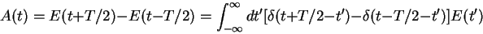
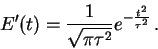

Kevin Schmidt, W9CF
6510 S. Roosevelt St.
Tempe, AZ 85283
October 6, 2001
To fit the most CW signals into the available spectrum, we need to limit the bandwidth taken up by the signals. It is therefore useful to see how the energy in a dot or dash pulse is distributed around the carrier frequency. Here I give some notes on how to make this analysis. The main result is that the spectrum for many keying shapes is given by the product of the spectrum of a square pulse times the spectrum of the slope of the rise and fall behavior of the pulse.
It seems from my experience reading morse, that the rise time should be the main factor in producing code that can be read by ear comfortably. Since the rise time dominates the bandwidth for the usual CW signal, the analysis shows that to get a nearly optimal bandwidth to rise time, the keying pulse shape should have a gaussian slope.
In the next section I review basic Fourier analysis of amplitude modulation. I then calculate the spectrum of a pulse with an exponentially shaped rise and fall as would be produced by simple RC networks. The results suggest the more general analysis in the following section, with the conclusion that a pulse with gaussian slope, i.e. error function rise and fall shapes, will have an optimal bandwidth and rise time.
It seems likely that all of this would have been worked out by radio engineers in the early 1900s when CW signals were first employed.
To analyze the spectrum generated by keying a transmitter let's look
at a single ``dot.'' If we imagine we have a carrier with angular
frequency , and we amplitude modulate it with an
envelop A(t), we get the
amplitude of the signal from the transmitter is
| (1) |
| (2) |
| (3) |
In the usual case, the modulation  contains frequency components
much smaller than the carrier frequency. Therefore the
is negligible and can be ignored.
The energy spectrum of the amplitude modulated signal is therefore
given by
contains frequency components
much smaller than the carrier frequency. Therefore the
is negligible and can be ignored.
The energy spectrum of the amplitude modulated signal is therefore
given by
| (4) |
It is convenient to write
| (5) |
To get an explicit result, I'll assume an explicit form for a keying
waveform.
A simple form where the Fourier transforms can be calculated analytically
is the case where the wave builds up exponentially (as in the usual
circuit) to the carrier value when the key is pressed,
and then decays exponetially to zero when the key is released. That is
 |
(6) |
The fourier transform integral of the amplitude is straightforward and
gives
![\begin{displaymath}
\tilde A(\omega) = -\left [ e^{i \omega T}-1 \right ]
\frac{1}{i \omega (i \omega \tau -1)}
\end{displaymath}](img19.gif) |
(7) |
| (8) |
The main features of the sidebands will therefore be given by the rise time, while the length of the pulse will modify those features somewhat.
Figures 2 and 3 show the energy density in dB referenced to the carrier energy density for of 20 milliseconds. The curves are plotted together in figure 4. Each curve is plotted versus frequency .
Notice that the differences between the 20 millisecond and 50 millisecond pulses are first the energy near the carrier frequency is larger for the longer pulse as needed since it has about 2.5 times as much energy, and second the ``ringing'' has more oscillations for the longer pulse as expected. The sidebands fall off 12 dB per octave once we are at frequencies beyond about .
The effect of the keying speed on the bandwidth as long as the rise time is small compared to pulse length is the change in shape of the central peak. It does get narrower for slower keying and wider for faster keying, however, the keying speed does not effect the overall bandwidth.
| (9) |
|  | (10) |
| (11) |
 |
(12) |
Since  is written as a convolution, its Fourier transform is now
the product
is written as a convolution, its Fourier transform is now
the product
| (13) |
Except for an unimportant change of the zero of time,
the exponential case calculated above can be written as
| (14) |
The Fourier transforms of these are
| (15) |
As we saw for the exponential case, the bandwidth is dominated by the
rise and fall time. Therefore it seems reasonable to try to optimize
the rise and fall waveform of the keying pulse. In terms of the function
whose integral is the rising and falling wave form, we want to
simultaneously make its width in real time and in frequency small.
One measure of this is the product of and where
they are defined as the variances in frequency and time
| (16) |
|  | (17) |
| (18) |
| (19) |
| (20) |
In figure 6 I show the keying wave form for milliseconds and and 50 milliseconds as in figure 1 for both the exponential and optimized wave form. Notice that the abrupt changes in the exponential form are absent from the error function form.
Figures 7 and 8 show the sideband energy density.
The sideband energy density for many pulse shapes factorizes. The first of the two factors is proportional to the Fourier transform squared of the square pulse and the second by the Fourier transform squared of the slope of the rise and fall. The analysis can be easily generalized to an arbitrary sequence of pulses. The Fourier transform of the single square pulse simply needs to be changed to the Fourier transform of the sequence of square pulses. For a given rise time, the error function shape for the rise and fall will attenuate unnecessary interference away from the carrier frequency much better than exponential keying.
![\includegraphics[width=12cm]{click4.ps}](img25.gif)